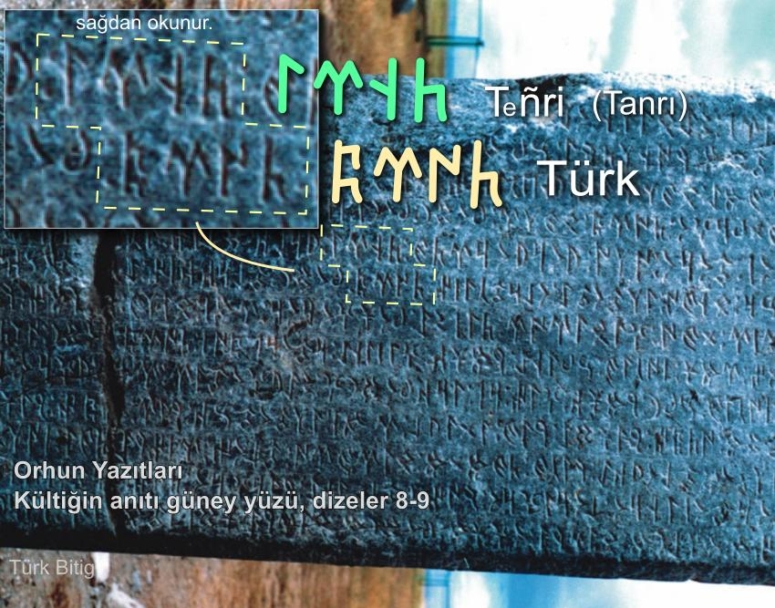
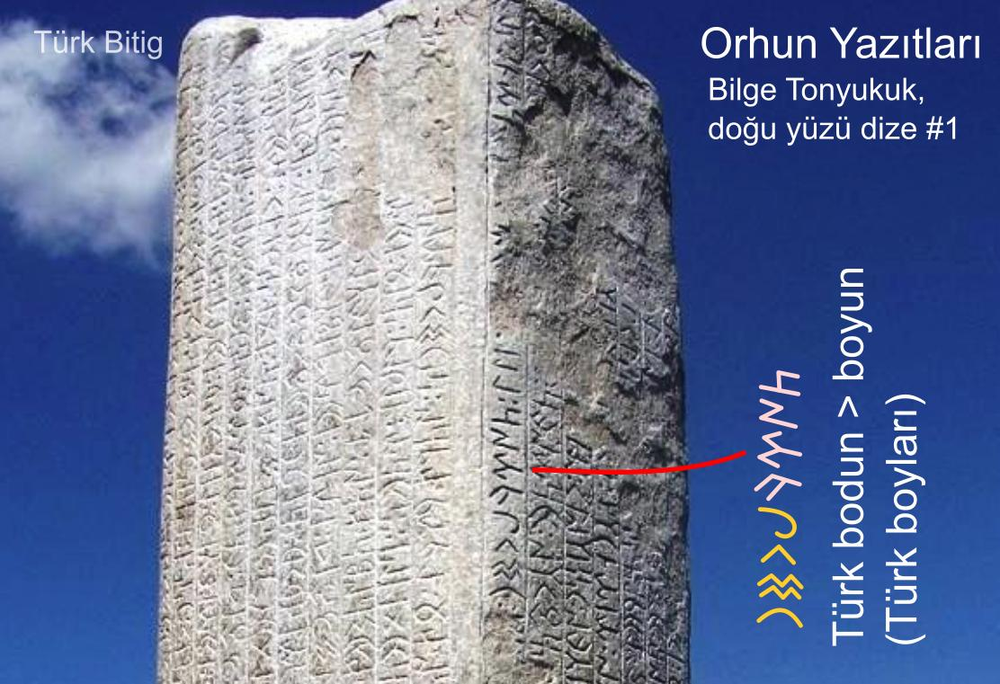

Göktürkçe Türk Kelimesi
Türk kelimesi, tarih buyunca gerek Çince gerek Farsca veya Arapça metinlerde sıkça geçer. Türklerin kendi yazdıkları metinlerde ise, bugün Göktürkçe veya Göktürk Alfabesi dediğimiz alfabe ile ilk kez Orhun Abidelerinde aşağıdaki iki şekilde yazılmıştır.
Türk 𐱅𐰇𐰼𐰜
Türk 𐱅𐰇𐰼𐰚
Kültiğin Abidesindeki yazı, Türk orduları komutanı Kültiğin öldüğünde, onun anısına ağabeyi Hükümdar Bilge Kağan tarafından bizzat yazdırılmıştır. Tonyukuk Abidelerindeki yazı ise başvezir Bilge Tonyukuk tarafından yazdırılmıştır. Bu Kelime Orhun Abidelerinde "Türk" veya "Türkbodun" (Türkboyun/boyları) şeklinde onlarca defa yazılmıştır.

Orhun Yazıtları, Kültiğin anıtında Göktürkçe Türk ve Tanrı kelimeleri görülmektedir.

Orhun Yazıtları, Bilge Tonyukuk anıtlarında "Türk Boyları" kelimeleri görülmektedir.